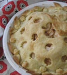
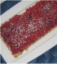
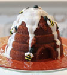
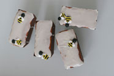
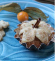

Helpful Hints and Recipes
to Enhance Your Kitchen Experience
• Gadget Demonstration Videos
• Recipes
• Tips
Gadget Demonstration Videos: Zing Anything
Click on the links below to view Zing Anything How-to Videos for the AquaZinger, CitrusZinger, and SaladZinger!
Recipes: Rosh Hashana
Apple Pie
Loads of apples in a perfect pastry.
Ingredients:
Crust:
- 2 cups flour
- 1/2 teaspoon salt
- 2/3 cup margarine or shortening
- 5-7 tablespoons ice water
- egg wash
Filling:
- 6 Cortland apples, thinly sliced
- 3/4 cup sugar
- 2 tablespoons flour
- 3/4 teaspoon cinnamon
- 1/4 teaspoon salt
- dash of nutmeg
- juice of half a lemon
Directions:
To make the crust, stir the flour and salt together. With a pastry blender, cut in the margarine or shortening until pieces are the size of small peas. Add the ice water, and toss until all the flour is moistened and mixture starts to form a ball. Divide the dough into two parts.
Roll out one part of the dough, and place in a 9-10 inch pie plate. Brush with a mixture made with one egg and two teaspoons water. (This prevents bottom dough from getting soggy.)
Combine the filling ingredients and spoon into pastry lined pan.
Roll out the second half of the dough. Use an apple pie topper to get the effect shown, and trim with pastry leaves.
Bake at 425° for 45-50 minutes.

Apple Tart
By Denise Levin
Ingredients:
Base:
- 1 cup flour
- 1/4 teaspoon salt
- 1/2 cup margarine
- 1 tablespoon vinegar
- 2 tablespoon sugar
Filling:
- 1 cup sugar
- 2 tbsp flour
- 1/2 teaspoon cinnamon
- *1 tin apple pie filling (or cherry pie filling)
- *2-3 grated apples
- juice of half a lemon
Directions:
Mix all base ingredients until crumbly and pat into a flan pan with a removable base and up the sides.
Combine all the filling ingredients and pour on top of crumbly base.
Bake at 375° for 45-55 minutes. Allow to cool, then dust with icing sugar.
*For blueberry tart, use 1 tin of blueberry pie filling, and 2/3 cup of blueberries.
I made a double recipe of the dough, and used a narrow rectangle flan pan for the apple tart, and a 10 inch pan for the blueberry tart I had too much filling for the apple tart, and too little for the blueberry tart, so I made the larger pan with half blueberry and half apple filling. It was a mistake that worked out beautifully!
Babby Rosie's Honey Cake
An old time favourite!
My grandmother used to come to us every year with this honey cake. She baked it in a sheet pan, lined with a brown paper bag. I've kept the recipe, but baked in a beehive pan for a special Yom Tov effect. I had enough left over batter to make 10 of the mini loaves.

Ingredients:
- 1 whole seedless orange, cut in chunks (do not peel)
- 6 eggs
- 1 1/2 cups sugar
- 1 1/2 cups honey
- 3 cups flour
- 1 1/2 teaspoons baking powder
- 1 1/2 teaspoons baking soda
- 3/4 cup strong coffee (or 1 1/2 tablespoons instant coffee dissolved in 3/4 cup boiling water)
Buttercream Frosting:
- (See behive cake pan insert, or use ready made)

Honey Icing:
- 1 1/2 cups icing sugar
- 1 tablespoon honey
- 1-3 tablespoons soymilk
Royal Icing for Bees:
- 1 tablespoon meringue powder
- 1 1/4 cups icing sugar
- 2 tablespoons water
- yellow and black food colouring
(See behive cake pan insert for instructions.)
Directions:
Preheat oven to 350°F. Grease and flour the beehive pan with Wilton cake release, or a baking spray.
Place orange in a food processor fitted with the steel blade. Pulse with quick on/offs until finely minced. Set aside.
Using an electric mixer, beat eggs with sugar until light, about 3 to 4 minutes. Add remaining ingredients except for orange and mix until combined. Add orange to batter and mix until combined.
Fill the pans with batter, spreading to the top edges of the pan, so batter is lower in the center.
Bake for 1 hour. (When you insert a cake tester, it will come out without any batter clinging to it.)
Cool for 15 minutes in pan, then invert onto cooling rack, and cool completely.
To assemble the cake: Stand one half of the cake upright; using a serrated knife, level off the flat side of the cake by trimming off rounded dome; repeat with other half. Spread buttercream frosting over the cut side of the cake; gently press cake halves together to secure. Place cake on serving plate. Spoon honey icing over cake, covering side seams. Decorate with honeybees.
Mini Baked Apples
A beautiful presentation to end off your meal.
Ingredients:

Mini Baked Apples:
- 2 dozen mini apples
- bread crumbs
Coating:
- 1 cup sugar
- 1 teaspoon cinnamon
Filling:
- 1 cup chopped pecans or raisins
- 2/3 cup brown sugar
- 1 tablespoon brandy
- 1/2 teaspoon cinnamon
Dough Leaves:
- 2 cups flour
- 1/2 teaspoon salt
- 2 sticks margarine
- 7-8 tablespoons ice water
- soymilk
- cinnamon
- sugar crystals
- cinnamon sticks
Directions:
Peel and core the apples.
Sprinkle bread crumbs at the bottom of disposable mini brioche pans or ramekins. The apples should fit snugly, as they tend to shrink as they bake.
Combine the coating ingredients in a bowl; roll the apples in the coating. Place the apples in the brioche pans or ramekins.
Combine the filling ingredients, and place in apple cavities.
To make the dough, stir the flour and salt together in a medium bowl. With a pastry blender or fork, cut in the margarine until pieces are the size of small peas. Add a little of the ice water at a time, and toss with a fork until all the flour is moistened and mixture starts to form a ball. Gather dough in your hands, and gently shape into a flat ball.
Roll the dough out, and cut out leaves with a small leaf shaped cookie cutter. Reroll any scraps, and keep cutting until you have 72 leaves. (If you have leftover dough, you can freeze it for another time.)
Place three leaves on the top of each apple, pressing down slightly. Brush each leaf with soy milk, and sprinkle with cinnamon and sugar crystals. Plce a piece of cinnamon stick in the center to form a stem.
Bake at 350° for about 35-50 minutes, depending on the size of the apple. (If the dough starts to brown too quickly, cover lightly with foil for the rest of the baking time.)
If desired, plate with a cookie and fresh fruit.